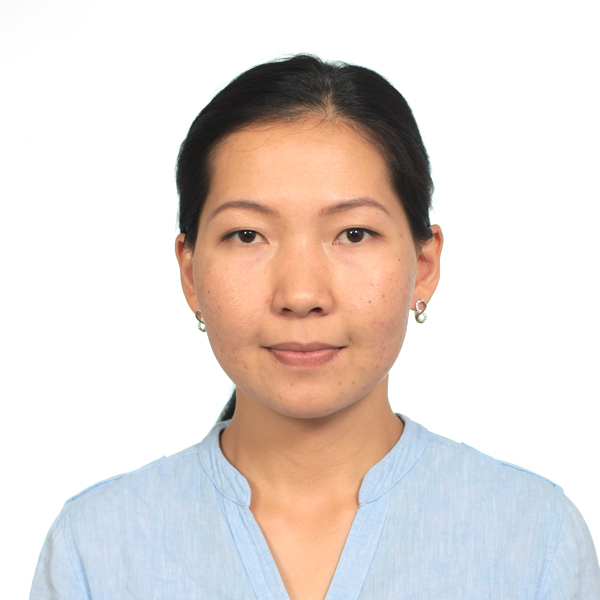

Бактыгуль Кожошова

Обо мне
Родилась и выросла в Бишкеке, 29 лет.
В настоящее время работаю в частной компании, розничный менеджер.
Также учусь в Жылдыз Академии
Образование
Средняя школа №55
Кыргызский экономический университет, экономист
Ходила на курсы английского языка, сейчас уровень pre-entermediate, без практики забывается
Хобби
- В детстве занималась танцами, люблю народные танцы
- Сейчас занимаюсь Айкидо, получила 5 кю, это начало)))
- Люблю ходить по горам нашей Родины
Stand up по Келечеку:
- Участник команды Puzzle по проекту Франклин
- Участник команды Movers по Summer Challenge from Anjela U & Saikal Dildemurat
- На 25.07.21 сделала по коду до 16 ДЗ, доделаю 17 и 18
- Стараюсь смотреть все встречи, уроки или смотрю записи
- По дизайну пересматриваю уроки обратно и делаю за учителем все примеры, трудно дается